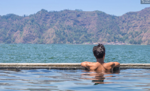
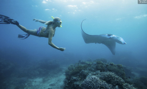

Bali: Instagramtour langsde meest schilderachtige plekjes
855
Beoordelingen
Duur: 8 - 10 uur
€60
Deze tour neemt je naar de meest schilderachtige en Instagramwaardige locaties rond Bali, waar je foto's maakt en de schoonheid van Bali ervaart. Ga op in de natuur en Balinese cultuur terwijl je monumenten en natuurwonderen verkent.?

Bali: Batur hike met zonsopgang en natuurlijke warmwaterbron
704
Beoordelingen
Duur: 8 - 10 uur
€60
Zie de zon opkomen boven Gunung Batur tijdens een vroege ochtendwandeling bij de meest iconische berg op Bali. Bewonder het uitzicht vanaf de actieve vulkaan in de buurt van het dorp Kintamani. Kom meer te weten over het gebied.

Ubud: waterval, rijstterrassen & apenbos
852
Beoordelingen
Duur: 8 - 10 uur
€60
Ontdek het centrum van de traditie en kunst in Bali op een priveexcursie vanuit Ubud. Je bezichtigt het geestelijk erfgoed de Batuantempel. Bezoek het Ubud Apenbos, lunch met uitzicht op de groene landschap dichtbij Tegalalang Rijstterrassen en meer.
Bali Zoo: ervaring Night at The Zoo
245
Beoordelingen
Duur: 8 - 10 uur
€60
Ontmoet exotische dieren in hun leefomgeving onder de sterren tijdens een begeleide nachttour in Bali Zoo. Voer de olifanten en herten en luister naar de ongelooflijke geluiden. Geniet van een heerlijk Braziliaans diner voordat je naar een vuurshow kijkt.
Vanaf Bali: zwem met mantaroggen in Nusa Penida
855
Beoordelingen
Duur: 8 - 10 uur
€60
Zwem met de prachtige mantaroggen van Nusa Penido tijdens een heerlijke snorkeltrip vanaf Bali. Bezoek de beroemde Manta Bay, ontdek de prachtige natuur van de Crystal Bay en ga naar Mangrove Point voor een ultiem snorkelavontuur.